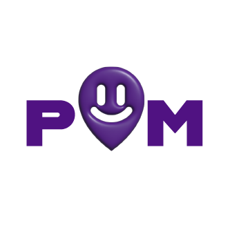

La carte
36 lieux de réemploi et d'entraide à Nantes, filtrables par catégorie, avec recherche, fiche détaillée et itinéraire.

Découvre la première carte interactive des friperies, ressourceries et réparateurs les moins chers de Nantes. Partage tes trouvailles de seconde main avec tes potes, visite nos boutiques partenaires et débloque des récompenses exclusives !

36 lieux de réemploi et d'entraide à Nantes, filtrables par catégorie, avec recherche, fiche détaillée et itinéraire.
Prends une photo de ta visite, garde-la dans ton album et gagne des points.
Échange tes points contre des offres chez des partenaires et retrouve tes bons.
Ajoute tes potes, consulte leurs trouvailles et invite-les par lien.
Plan Malin est un projet de cours conçu pour l'association Dernière Main, qui vise à rendre la seconde main accessible aux étudiants nantais. L'application est un prototype : amis, points et offres sont des données de démonstration, enregistrées uniquement sur ton appareil.
Essayer l'application